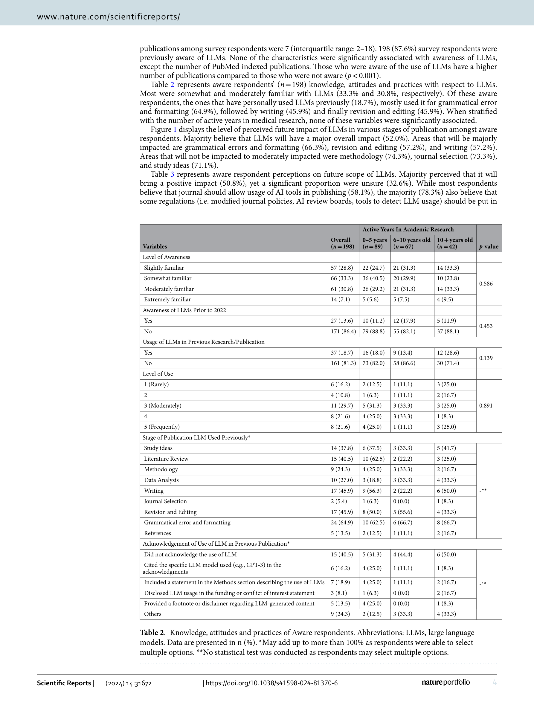

Figure 1
하버드 의과대학 Global Clinical Scholars Research Training (GCSRT) 프로그램에 참여한 59개국, 65개 전문 분야의 의료·보건 연구자 226명을 대상으로 LLM의 인지도, 사용 현황, 미래 영향에 대한 인식을 횡단면 조사한 연구이다. 87.6%가 LLM을 인지하고 있으나 실제 출판에 사용한 비율은 18.7%에 불과하며, 사용자의 40.5%는 논문에 AI 사용을 공개하지 않았다. 연구자들의 과반수(50.8%)가 LLM의 긍정적 미래 영향을 예측하면서도, 78.3%는 남용 방지를 위한 규제가 필요하다고 답하여, 기대와 우려가 공존하는 글로벌 연구자 인식의 스냅샷을 제공한다.
| 지표 | 결과 |
|---|---|
| LLM 인지율 | 87.6% (198/226명) |
| 출판에 LLM 사용 경험 | 18.7% (인지 응답자 중 37명) |
| LLM 사용 비공개율 | 40.5% (사용자 중) |
| 긍정적 미래 영향 예측 | 50.8% (인지 응답자 중) |
| 불확실 | 32.6% |
| 저널의 AI 사용 허용 지지 | 58.1% |
| 규제 필요성 동의 | 78.3% |
6. 2022년 이전 인지율: 인지 응답자의 86.4%가 2022년 이전에는 AI 도구를 몰랐다고 답변
총평: 59개국 226명 임상 연구자를 대상으로 LLM 활용 현황을 조사한 글로벌 설문 연구로, 광범위한 국제적 표본이 강점이나 자기보고 편향과 단면 설계의 한계로 인과 추론이 어렵다.